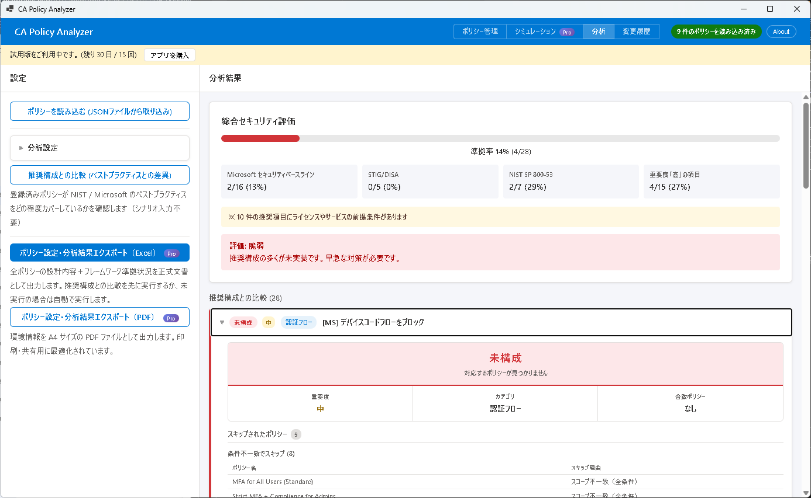
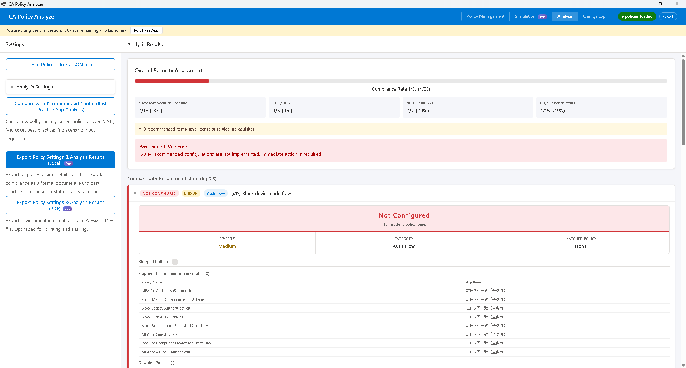

CA Policy Analyzer ユーザーマニュアル

ギャップ分析は、登録済みの条件付きアクセスポリシーを業界標準の推奨構成（プリセット）と比較し、不足している項目や設定の弱点を自動的に検出する機能です。
以下の 3 つのセキュリティフレームワークに対応しています。
これらのフレームワークから導出された 22 項目の推奨構成 に対して、現在のポリシーがどの程度適合しているかを評価します。
各推奨項目に対して、以下のいずれかのステータスが割り当てられます。
| ステータス | 意味 |
|---|---|
| Compliant（適合） | ポリシーが推奨構成に一致しています。追加の対応は不要です。 |
| Weak（不十分） | 該当するポリシーは存在しますが、推奨される要件を完全には満たしていません。設定の強化を検討してください。 |
| Missing（欠落） | 推奨される構成に該当するポリシーが見つかりません。新たにポリシーを作成する必要があります。 |
| Misconfigured（設定誤り） | ポリシーの設定が推奨構成と異なっています。設定内容を見直し、修正してください。 |
| Design Flaw（設計上の欠陥） | 個々のポリシーは存在しますが、ポリシーの組み合わせではカバーできないセキュリティ上の隙間があります。ポリシー全体の設計を見直してください。 |
準拠率は、Compliant（適合）と判定された項目数を全項目数で割ったパーセンテージです。
計算式: Compliant の項目数 ÷ 全項目数 × 100%
準拠率と各項目のステータスに基づいて、以下の総合判定が下されます。
| 判定 | 基準 |
|---|---|
| Sufficient（十分） | 高い準拠率を達成しており、主要なセキュリティリスクが適切にカバーされています。 |
| Mostly Sufficient（概ね十分） | 大部分の項目は適合していますが、一部の項目で改善が必要です。 |
| Needs Improvement（改善が必要） | 複数の重要項目で不足や設定の弱点があります。優先的に対応してください。 |
| Vulnerable（脆弱） | 基本的なセキュリティ要件が満たされていません。早急な対応が必要です。 |
分析結果の各推奨項目をクリックすると、以下の詳細情報を確認できます。
| 項目 | 説明 |
|---|---|
| 重要度 | High（高）/ Medium（中）/ Low（低）の 3 段階で、推奨項目の重要性を示します。 |
| カテゴリ | フレームワーク内での分類名です。関連する推奨項目をグループ化しています。 |
| 一致ポリシー | この推奨項目に該当すると判定された既存ポリシーの名前が表示されます。 |
| 前提条件 | 推奨構成を実装するために必要なライセンスやサービスです（例: Entra ID P2、Microsoft Intune）。 |
| 推奨修正 | ステータスを Compliant に改善するための具体的な手順が記載されています。 |
| レポート専用デプロイガイド | 本番環境に影響を与えずに安全にテストするための、レポート専用モードでの導入手順です。 |
| 監査ログヒント | ポリシー変更の影響を確認するための KQL（Kusto Query Language）クエリが提供されます。 |
「推奨修正」の手順に従ってポリシーを変更した後は、再度ギャップ分析を実行して、ステータスが Compliant に改善されたことを確認してください。
CA Policy Analyzer User Manual

Gap Analysis is a feature that compares your registered Conditional Access policies against industry-standard recommended configurations (presets) to automatically detect missing items and configuration weaknesses.
The following three security frameworks are supported:
Your current policies are evaluated against 22 recommended configuration items derived from these frameworks to determine how well they comply.
Each recommended item is assigned one of the following status values.
| Status | Meaning |
|---|---|
| Compliant | The policy matches the recommended configuration. No further action is needed. |
| Weak | A relevant policy exists but does not fully meet the recommended requirements. Consider strengthening the configuration. |
| Missing | No policy matching the recommended configuration was found. A new policy needs to be created. |
| Misconfigured | The policy configuration differs from the recommendation. Review and correct the settings. |
| Design Flaw | Individual policies exist, but there are security gaps that cannot be covered by the current combination of policies. Review the overall policy design. |
The compliance rate is the percentage of items rated as Compliant out of the total number of items.
Formula: Number of Compliant items ÷ Total items × 100%
Based on the compliance rate and the status of each item, one of the following overall verdicts is assigned.
| Verdict | Criteria |
|---|---|
| Sufficient | A high compliance rate has been achieved, and major security risks are adequately covered. |
| Mostly Sufficient | Most items are compliant, but some areas require improvement. |
| Needs Improvement | Multiple important items have deficiencies or weaknesses. Priority action is recommended. |
| Vulnerable | Basic security requirements are not met. Immediate action is required. |
Click on any recommended item in the analysis results to view the following detailed information.
| Field | Description |
|---|---|
| Severity | Indicates the importance of the recommended item on a three-level scale: High, Medium, or Low. |
| Category | The classification name within the framework. Groups related recommended items together. |
| Matched Policy | Displays the name of the existing policy that was identified as matching this recommendation. |
| Prerequisites | Licenses or services required to implement the recommended configuration (e.g., Entra ID P2, Microsoft Intune). |
| Recommended Fix | Specific steps to improve the status to Compliant. |
| Report-Only Deployment Guide | Instructions for safely testing in report-only mode without impacting the production environment. |
| Audit Log Hints | KQL (Kusto Query Language) queries provided to verify the impact of policy changes. |
After modifying policies following the "Recommended Fix" steps, run the Gap Analysis again to confirm that the status has improved to Compliant.